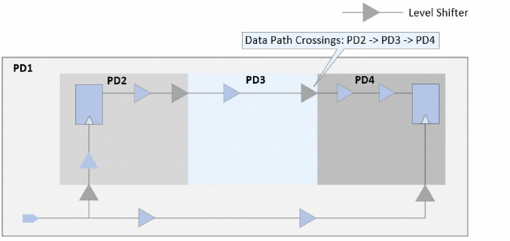
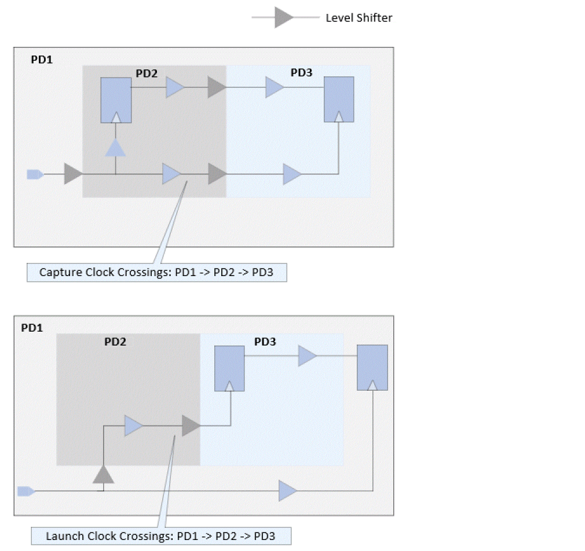
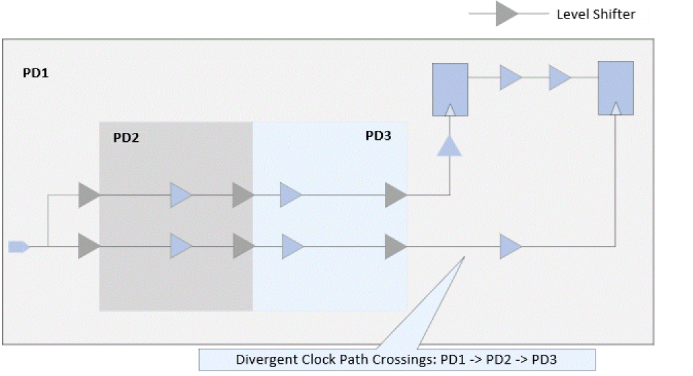
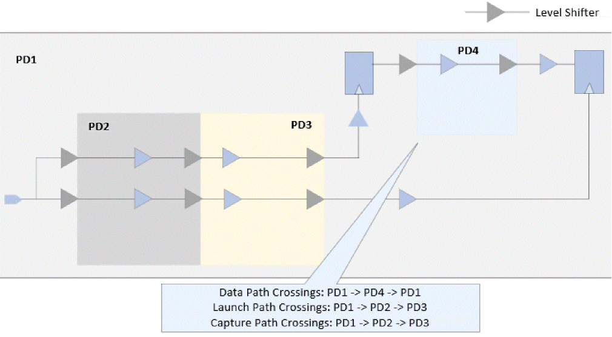

Supported IPD Logic Checks
Tempus supports the following IPD logic checks:
- Multiple power domain crossings on data paths (Multiple Crossings on Data Paths)
- Multiple power domain crossings on clock paths (Multiple Crossings on Clock Paths)
- Similar crossings on the divergent clock paths (Similar Crossings on Divergent Clock Paths)
- Multiple power domains post common point (Multiple Power Domains Post Common Point)
Multiple Crossings on Data Paths
Consider the figure below, where the data path travels between three power domains, PD2 ' PD3 ' PD4, such a path will be highlighted by this check.
Figure -89 Multiple Crossings on the Data Path

Multiple Crossings on Clock Paths
Consider the figure below, where in one case the capture paths crosses PD1' PD2 ' PD3, while in the other case, the launch path crosses the same PD transition, irrespective of the CPPR point. Both these cases will be flagged through this check. Only IPD paths are checked for this check, and non-IPD paths having such crossings before the common points will not be reported.
Figure -90 Multiple Crossings on the Clock Path

Similar Crossings on Divergent Clock Paths
In the figure below, both the launch and capture paths have the same PD transition, that is, PD1-> PD2 -> PD3. If the design had been implemented considering these transitions to be on the common path, this path will not be considered an IPD path, thus leading to significant reduction in the added signoff corners. This check is useful in flagging such paths.
Figure -91 Crossings on Divergent Clock Paths

Multiple Power Domains Post Common Point
While the other IPD logic checks target IPD crossings, this check works on the number of power domains/PG net groups interacting on a timing path. As mentioned earlier, the minimum number of power domains needed for a path to be an IPD path is two. Any path having greater than two power domain interactions on either of the launch, capture, or data paths can be reported through this check. This check helps to understand the overall distribution of multiple PD crossings across the whole design.
Figure -92 Multiple PDs post common point

In the above figure, the total PD interactions on the entire path is 4 (PD1, PD2, PD3, and PD4). These type of paths can be reported through this check.
Return to top